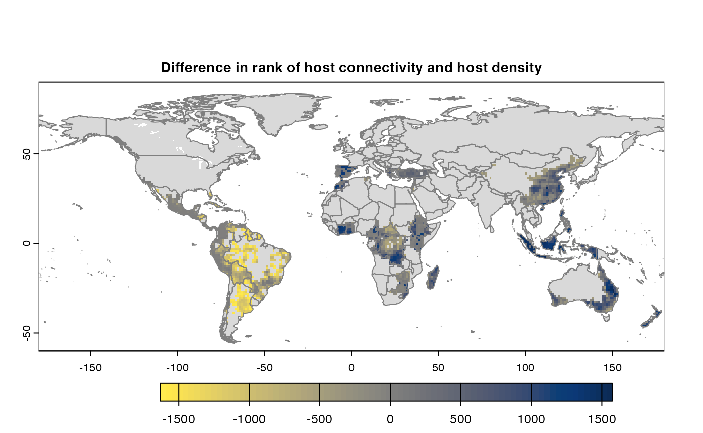
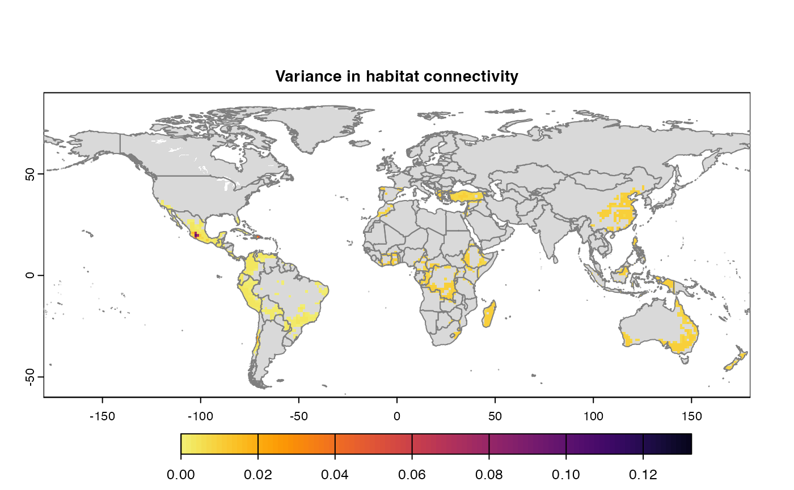
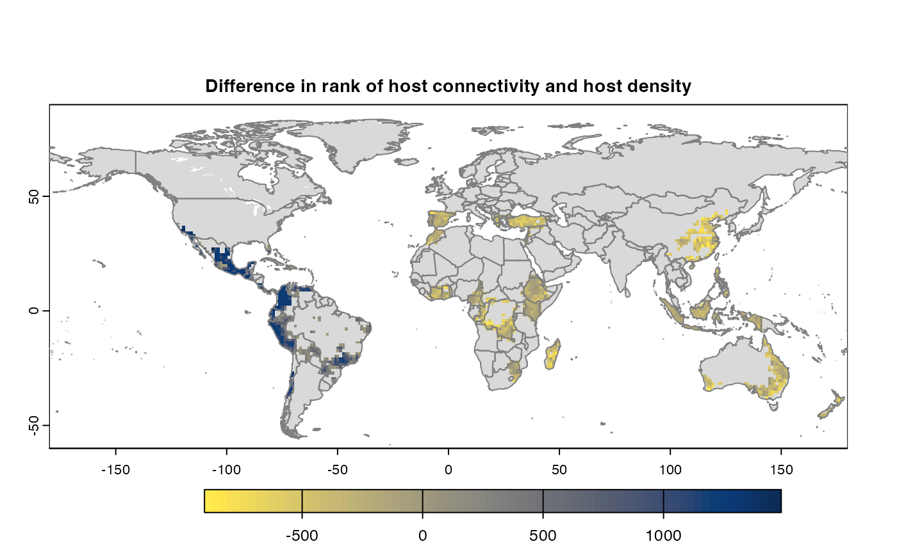
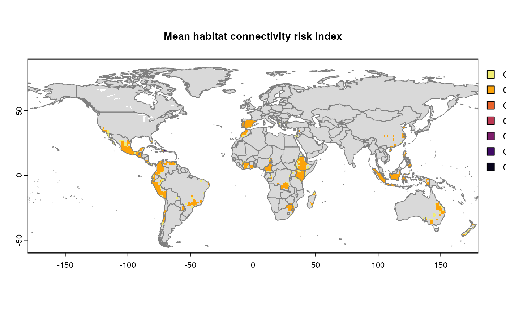
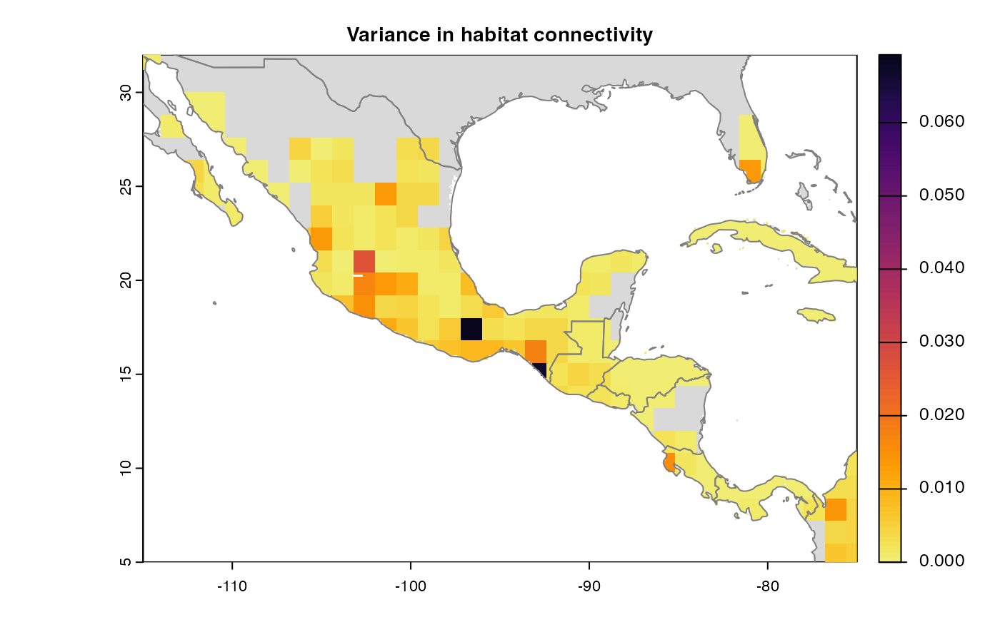
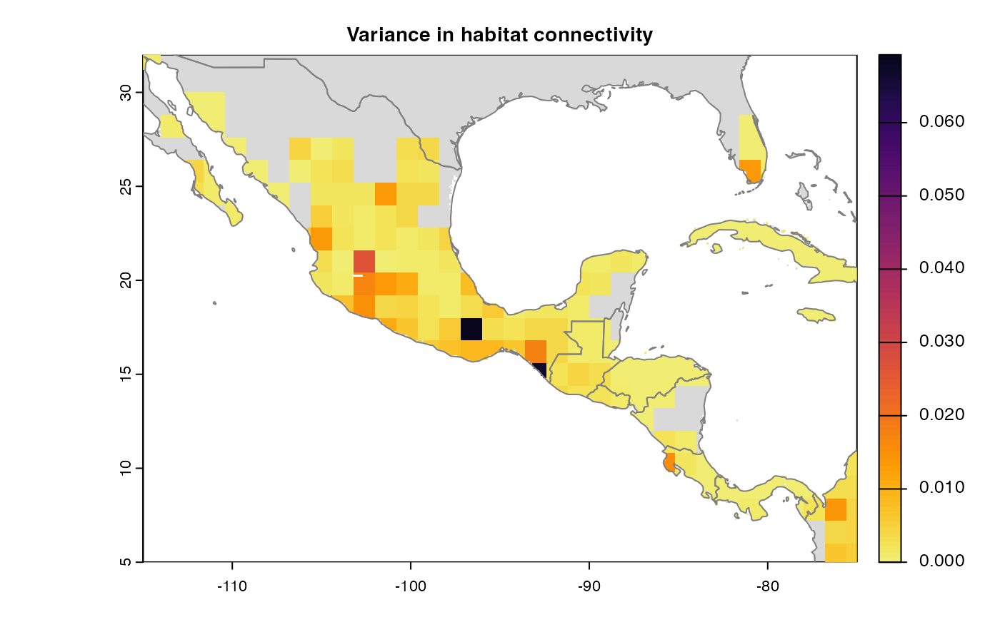
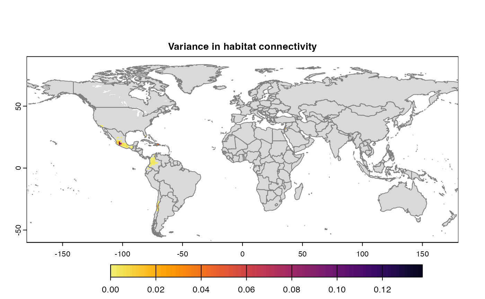
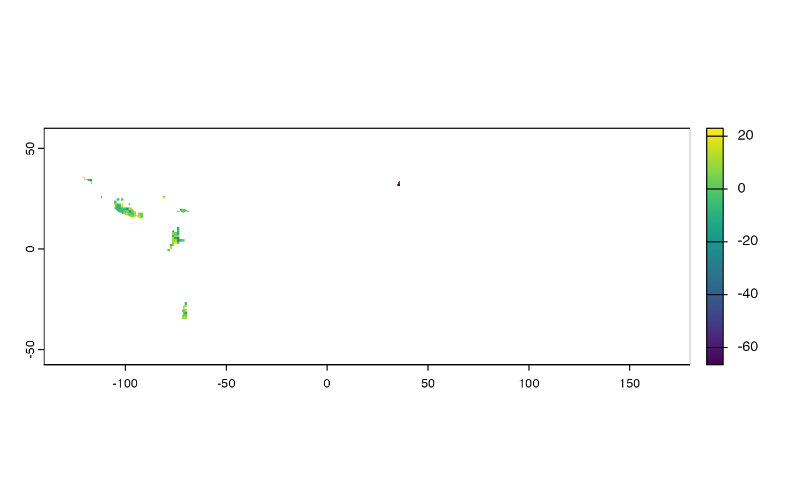

Mapping habitat connectivity with geohabnet
Krishna Keshav(krishnakeshav.pes@gmail.com)
24 April, 2025
Source:vignettes/articles/analysis.Rmd
analysis.RmdAbstract
Habitat connectivity can be used to analyse the potential spread of plant pathogen, pest, or any habitat-dependent species. Habitat connectivity of a species depends on the habitat availability (e.g., host availability for plant pests or pollinators or availability of favorable climate for plant species), and probability of movement of a species between habitat locations. In geohabnet, habitat connectivity indicates the importance of a habitat location in facilitating the spread of a species across a geographic region, relative to other locations in the same landscape. For plant pathogens and pests, the spatial distribution of host availability plays a crucial role for defining habitat availability and the establishment of the pest species. Locations with abundant habitats (e.g., plant hosts) may play a minor role in species spread if they are isolated. Yet, a location with limited habitat may play a major role in the spread of a species if it acts as a bridge between regions that would otherwise be separated. (Keshav et al. 2023) provides the R-user community with a network-based approach to estimate habitat connectivity across the world. This package supports up to 10 parameters that has potential to influence habitat or landscape connectivity. The implementation of (Keshav et al. 2023) expands the cropland connectivity method for plant pathogens proposed by (Xing et al. 2020) to a general way of calculating habitat connectivity for any species. The network-based framework for (Keshav et al. 2023) is the same as the one proposed by (Xing et al. 2020). However, (Keshav et al. 2023) provides more flexibility to users to modify any parameter values in this framework.
Although this article focuses on the use of (Keshav et al. 2023), it is useful to know for interested developers that package design is inspired from widely used Configuration-based design in software development (Majors 2022), (Nash and DeMore 2009); and (Allaire 2023) provides a text based interface to control the parameters values for risk analysis in this context.
The primary objective of this vignette is to help user being familiarized with (Keshav et al. 2023), list its capabilities and get an intuition behind them. It also describes the implementation of the main functions in (Keshav et al. 2023) to support this intuition. Throughout the article, we will be citing external sites and resources, which are relevant for the use of this package.
Pre-requisites
Definitions
Raster - Raster is a digital encoding representation of geographic information as a grid of cells or pixels, where each cell contains a value representing a specific property or attribute of a location. Some details of a raster data include spatial resolution, dimensions, or geographic extent, which are useful in identification and processing. Here, we use raster to represent maps.
TIFF(Tag Image File Format) is a type of file that stores geographic information in the form of raster. (Keshav et al. 2023) has been tested using .tif and .nc files but it would be able to handle any raster type of file supported by the R package terra.
External materials
Download and install R, R Studio - https://rstudio-education.github.io/hopr/starting.html/
Raster - https://www.adobe.com/creativecloud/file-types/image/raster.html
TIFF - https://www.adobe.com/creativecloud/file-types/image/raster/tiff-file.html/
Data sets
For estimating habitat connectivity for understanding the spread of plant pathogens or pests, we use cropland density or host availability around the world as a proxy for habitat availability (this assumption can be complemented with species-specific environmental suitability for a better proxy of habitat availability). We use publicly available sources to obtain crop distribution in the form of raster layers.
CROPGRIDS (Tang FHM 2024)
EARTHSTAT (Monfreda, Ramankutty, and Foley 2008)
MapSpam (2010, 2017) (International Food Policy Research Institute 2019)
CroplandCROS (Service 2025)
GBIF (GBIF 2025)
geodata provides a set of APIs to access the EARTHSTAT and MapSPAM datasets directly in R (see code below).
The raster layers from the data sources listed above may need some transformation before using them in (Keshav et al. 2023). A valid raster layer to be used in geohabnet is one that its entry values of each pixel range from 0 (no habitat available) to 1 (habitat is available in the entirety of the pixel). For example, data layers of cropland fraction from EARTHSTAT can be directly provided to (Keshav et al. 2023) functions without the need to re-scale its entries. However, data layers of harvested area from CROPGRIDS will need re-scaling the values of each grid cell in the raster (see an example of how to do this below).
For visualization and plots, (Keshav et al. 2023) uses rnaturalearth.
Quick Start
Meta information
- Package information - https://garrettlab.github.io/HabitatConnectivity/
- CRAN site - https://CRAN.R-project.org/package=geohabnet
- Source code - https://github.com/GarrettLab/HabitatConnectivity/tree/main/geohabnet/
- Report issues - https://github.com/GarrettLab/CroplandConnectivity/issues/
- Garrett lab website - https://www.garrettlab.com/
Installation and loading
Installing geohabnet will automatically install its
dependencies on other R packages. See the list of dependencies using
desc::desc(package = "geohabnet")
if (!require("devtools")) {
install.packages("devtools")
}
if (!require("geohabnet")) {
utils::install.packages("geohabnet")
}Alternatively, you can install the development version of
geohabnet from GitHub repository.
library("devtools")
#> Loading required package: usethis
if (!require("geohabnet")) {
install_github("GarrettLab/HabitatConnectivity", subdir = "geohabnet")
}
#> Loading required package: geohabnetEither way, now you can load geohabnet in R as
follows:
At any point, you can access the help page using the following
?geohabnet # For description of the package
# and
?geohabnet::msean # For documentation of a function (in this case, the msean function)Habitat connectivity analysis based on default parameters
The section below illustrate how the habitat connectivity analysis can be conducted using the default set of values for the supported parameters. For this example, we use the raster layer for avocado harvested area from CROPGRIDS as a real-world case study for the habitat connectivity of avocado-specific pathogens. This example would run the analysis on global geographical extent relatively quickly since the crop presence around the world is relatively low.
For the purposes of demonstration, the code below sets the host
parameter programatically or directly in RStudio. Alternatively, the
parameters can be fed via parameters.yaml in an interactive
way using either the path or setting iwindow = TRUE for the
windows prompt in set_parameters()
Running your first habitat connectivity analysis
If you are also replicating this example, please first download the avocado layer from CROPGRIDS and put it in the folder you are currently working. Note that we are downloading the raster layer for host availability (or habitat availability) manually from CROPGRIDS. However, an alternative option is getting the data layer directly in RStudio using the geodata package (depending on whether geodata is down or not). At the time, we created this vignette geodata was not working on our local machine but the R code to do so is provided.
#if (!require(geodata))
# install.packages("geodata")
#avocado_sp <- geodata::crop_monfreda(crop = "avocado", var = "area_ha", path = tools::R_user_dir("geohabnet", which = "config"))
library(terra)
#> terra 1.8.42
avocado_sp<-rast("CROPGRIDSv1.08_avocado.nc")
cell.area <- (0.05*111111)*(0.05*111111) /10000 #area in heactares
avocado_sp<-avocado_sp$harvarea / cell.area #area in hectares
values(avocado_sp)<-ifelse(values(avocado_sp) > 0,
values(avocado_sp), NaN)
avocado_sp<-aggregate(avocado_sp, fact=2, fun="mean", na.rm=TRUE)
#> |---------|---------|---------|---------|=========================================
writeRaster(avocado_sp, "avocado_density.tif", overwrite=TRUE)Note that, apart from getting the raster in R, we are also scaling the entry values of each grid cell in the raster layer, from harvested area in hectares to avocado cropland fraction. We are aggregating this raster layer to reduce computational cost when running the analysis (for illustrative purposes only, you may not need to do this for your own dataset). We are also saving the new avocado area fraction as a new raster layer in our local machines.
Setting values in a function
Now let’s visualize how the avocado area fraction looks like. The
internal implementation and program deals with object of
terra (Hijmans 2023) and
igraph(Csardi and Nepusz
2006) . The primary object is of type SpatRaster
from terra.
In the example below, we will use the same spatial raster obtained for avocado. First, it shows the properties of the raster layer, which we will learn about them below. [gplot()] quickly shows the content of raster layer.
avocado_sp
#> class : SpatRaster
#> dimensions : 1800, 3600, 1 (nrow, ncol, nlyr)
#> resolution : 0.1, 0.1 (x, y)
#> extent : -180, 180, -90, 90 (xmin, xmax, ymin, ymax)
#> coord. ref. : lon/lat WGS 84 (CRS84) (OGC:CRS84)
#> source(s) : memory
#> name : harvarea
#> min value : 3.268422e-06
#> max value : 1.700697e-01
gplot(avocado_sp)
Now that we have a raster object in R, this raster layer can be used
as the input in the msean function (one of the main
functions of geohabnet) to produce your first habitat
connectivity analysis. In this case, we are providing input for the
always-required parameter - rast and keeping the default values
for the other parameters supported by this function (for now). Running
the example below usually takes 5-10 minutes depending on the processing
power of your machine.
geo_net <- msean(avocado_sp)
#> |---------|---------|---------|---------|=== 
#> |---------|---------|---------|---------|===== |---------|---------|---------|---------|========== #> |---------|---------|---------|---------|=== 
Many, many congratulations! You have just generated a full sensitivity analysis of habitat connectivity for avocado-specific pathogens and pests. Take a minute to appreciate the beauty of our three outcome maps: the map of mean habitat connectivity, the map of variance habitat connectivity, and the map of the difference between them.
Now let’s dive a little bit on the nitty-gritty details. The function
msean is very similar to sean except that
msean() is able to produce the maps above. They also return
different S4 objects: a GeoNetwork object is produced by
msean, while sean produces a
GeoRasters object. The results should be interpreted in
accordance to the values of other parameters that have factored as
arguments to sean. Run ?sean to see all the supported
parameters. For now, let’s focus on some parameters you might want to
change.
rast - spatRaster. Represents the map of habitat availability in a geographical area. In our example above, this is
avocado_sp, the unique parameter that was provided tomsean.geoscale - Vector. Refers to the geographical coordinates in the form of c(Xmin, Xmax, Ymin, Ymax).
-
global - Logical. When set as TRUE, geoscale is ignored.
-
You can get the geographical scales used in a global habitat connectivity analysis (like the one above) by running
global_scales() #> $east #> [1] -24 180 -58 60 #> #> $west #> [1] -140 -34 -58 60 -
It is not highly recommended to change the default value for global scales used for a global connectivity analysis since it has been finalized after several tries. However, if you need to change the global scale for an advanced use, you can set different global geographic scales using the following
#set_global_scales(list(east = c(-24, 180, -58, 60), west = c(-140, -34, -58, 60)))
-
thresholds - Numeric.
mseansupports two types of thresholds: host density and link weights represented by hd_threshold and link_threshold, respectively. The former threshold (host density threshold or habitat availability threshold) excludes from the habitat connectivity analysis all values in aggregated raster layer below this threshold. The latter threshold (link weight threshold) excludes from the habitat connectivity analysis all entry values in the adjacency matrix that are below this threshold. Entries in the adjacency matrix (or link weights in its corresponding network) are the product of habitat availability and the relative likelihood of dispersal between each pair of locations in the selected region.-
resolution - Numeric. This is a spatial aggregation value. In the context of SpatRaster, this parameter is the number of pixels that are aggregated to produce a new finer/coarser version raster data layer. Default is
reso() #> [1] 12 Outcomes -
mseancalculates, produces, and plots three maps of habitat connectivity in a region, which are the same outcomes produced bysensitivity_analysis()(the other main function ofgeohabnet). An alternative issean()which can be called to obtain the results from the function call and has no side effects.
Using configuration
More parameters are available under configuration and thus more
control over the analysis. The configuration file name is
parameters.yaml, currently supporting up to 10 parameters.
The intuition behind this methodology is to provide a basic interface
for setting new values. The snippet below describes the basic usage of
configuration.
Get the initial configuration file. By default this function will
save the file in temporary directory tempdir(), however we
recommend saving to path where program will have write permissions.
Using iwindow = TRUE will prompt a selection window to save
config file.
config_file <- get_parameters(out_path = tempdir())
config_file
#> [1] "/var/folders/r5/zggvft9d3yn5kh51wqp78rd00000gn/T//RtmpuOY0hA/parameters.yaml"The file should look something like this -

The values must be modified without modifying the structure. The
order don’t matter for the program. The new values in the configuration
must be fed to the workflow. For the purposes of demonstration, the code
below sets the host parameter programitically. The parameters can be fed
via parameters.yaml in an interactive way as well using
either the path or setting iwindow = TRUE for the windows
prompt in set_parameters()
if (!require("geodata"))
{
install.packages("geodata")
}
#> Loading required package: geodata
path_to_avo <- "avocado_density.tif" #terra::sources(avocado_sp)
params_file <- geohabnet::get_parameters()
#install.packages("yaml")
params_yaml <- yaml::yaml.load_file(params_file)
params_yaml$default$`CCRI parameters`$Host <- path_to_avo
yaml::write_yaml(params_yaml, params_file)
geohabnet::set_parameters(params_file)
#> [1] TRUE
#using iwindow = true will prompt a selection window to choose config file.get_parameters() was only to fetch the initial
parameters. While you can, it is not required to re-fetch if the
parameters has not been modified in the configuration. Modify the value
and feed it to workflow using set_parameters().
Parameters
Hosts
The library supports a spatial raster file (e.g. TIFF). The case
studies were done on crop data from Monfreda(Monfreda, Ramankutty, and Foley 2008) and
Mapspam(International Food Policy Research
Institute 2019) which is available via geodata
package (Hijmans et al. 2024)
results <- sensitivity_analysis()
#> Warning in max(wv, na.rm = TRUE): no non-missing arguments to max; returning
#> -Inf
#> Warning in max(wv, na.rm = TRUE): no non-missing arguments to max; returning
#> -Inf
#> Warning in max(wv, na.rm = TRUE): no non-missing arguments to max; returning
#> -Inf
#> Warning in max(wv, na.rm = TRUE): no non-missing arguments to max; returning
#> -Inf
#> Warning in max(wv, na.rm = TRUE): no non-missing arguments to max; returning
#> -Inf
#> Warning in max(wv, na.rm = TRUE): no non-missing arguments to max; returning
#> -Inf
#> Warning in max(wv, na.rm = TRUE): no non-missing arguments to max; returning
#> -Inf
#> Warning in max(wv, na.rm = TRUE): no non-missing arguments to max; returning
#> -Inf
#> Warning in max(wv, na.rm = TRUE): no non-missing arguments to max; returning
#> -Inf
#> Warning in max(wv, na.rm = TRUE): no non-missing arguments to max; returning
#> -Inf
#> Warning in max(wv, na.rm = TRUE): no non-missing arguments to max; returning
#> -Inf
#> Warning in max(wv, na.rm = TRUE): no non-missing arguments to max; returning
#> -Inf
#> Warning in max(wv, na.rm = TRUE): no non-missing arguments to max; returning
#> -Inf
#> Warning in max(wv, na.rm = TRUE): no non-missing arguments to max; returning
#> -Inf
#> Warning in max(wv, na.rm = TRUE): no non-missing arguments to max; returning
#> -Inf
#> Warning in max(wv, na.rm = TRUE): no non-missing arguments to max; returning
#> -Inf
#> Warning in max(wv, na.rm = TRUE): no non-missing arguments to max; returning
#> -Inf
#> Warning in max(wv, na.rm = TRUE): no non-missing arguments to max; returning
#> -Inf
#> Warning in max(wv, na.rm = TRUE): no non-missing arguments to max; returning
#> -Inf
#> Warning in max(wv, na.rm = TRUE): no non-missing arguments to max; returning
#> -Inf
#> Warning in max(wv, na.rm = TRUE): no non-missing arguments to max; returning
#> -Inf
#> Warning in max(wv, na.rm = TRUE): no non-missing arguments to max; returning
#> -Inf
#> Warning in max(wv, na.rm = TRUE): no non-missing arguments to max; returning
#> -Inf
#> Warning in max(wv, na.rm = TRUE): no non-missing arguments to max; returning
#> -Inf
#> Warning in max(wv, na.rm = TRUE): no non-missing arguments to max; returning
#> -Inf
#> Warning in max(wv, na.rm = TRUE): no non-missing arguments to max; returning
#> -Inf
#> Warning in max(wv, na.rm = TRUE): no non-missing arguments to max; returning
#> -Inf
#> Warning in max(wv, na.rm = TRUE): no non-missing arguments to max; returning
#> -Inf
#> Warning in max(wv, na.rm = TRUE): no non-missing arguments to max; returning
#> -Inf
#> Warning in max(wv, na.rm = TRUE): no non-missing arguments to max; returning
#> -Inf
#> |---------|---------|---------|---------|==== #> |---------|---------|---------|---------|====== |---------|---------|---------|---------|========== 
#> |---------|---------|---------|---------|==== 
Thresholds
Thresholds are used to select subset of values from the
SpatRaster on which the operations are applied. It directly
effects the connectivity and gives a sense of sensitivity in the
network. The intermediate goal is to produce a adjacency graph which
essentially determines the connectivity. Cells which doesn’t meet the
threshold are removed from the consideration by dispersal models.
risk_indexes <- msean(avocado_sp, global = FALSE, hd_threshold = 0.0001, link_threshold = 0.001)
#> Warning in max(wv, na.rm = TRUE): no non-missing arguments to max; returning
#> -Inf
#> Warning in max(wv, na.rm = TRUE): no non-missing arguments to max; returning
#> -Inf
#> Warning in max(wv, na.rm = TRUE): no non-missing arguments to max; returning
#> -Inf
#> Warning in max(wv, na.rm = TRUE): no non-missing arguments to max; returning
#> -Inf
#> Warning in max(wv, na.rm = TRUE): no non-missing arguments to max; returning
#> -Inf
#> Warning in max(wv, na.rm = TRUE): no non-missing arguments to max; returning
#> -Inf
#> Warning in max(wv, na.rm = TRUE): no non-missing arguments to max; returning
#> -Inf
#> Warning in max(wv, na.rm = TRUE): no non-missing arguments to max; returning
#> -Inf
#> |---------|---------|---------|---------|== 
#> |---------|---------|---------|---------|== #> |---------|---------|---------|---------|== Density Thresholds
host density threshold. The host density threshold is the minimum
cropland proportion in the grid cells (or locations) that will be
included in the analysis. This parameter is called
HostDensityThreshold and supports a list of values between
0 and 1. Before running the sensitivity_analysis() function, check that
the values for the host density threshold are smaller than the maximum
host density in the map to prevent errors. The values are rounded off to
5 decimal points.
Link Thresholds
Based on the information on host distribution and dispersal kernels, adjacency matrices are created, where entries are the likelihood of pathogen movement between locations. Then, adjacency matrices are converted into graph objects to perform a network analysis, where the entries in the adjacency matrices now are the weight of the links of the network.
Choosing link weight thresholds helps to focus the analysis on the more likely pathogen dispersal in the landscape.
Like what you did with the host density threshold, you can provide a
list of positive values to LinkThreshold. Before running
the sensitivity_analysis() function, check that the values for the link
weight threshold are smaller than the maximum link weight in the network
to prevent errors.
Aggregation
Aggregation strategy refers to the function used to create a new map of host density with a lower resolution (larger cells). Reducing the spatial resolution helps to reduce the computational power needed to run the analysis.
If AggregationStrategy: [sum], then the sum of the cropland proportion of all initially small grids within a large grid is divided by the total number of initially small grids within that large grid.
If AggregationStrategy: [mean], then the sum of the cropland proportion of all initially small grids within a large grid is divided by the total number of initially small grids containing only land (where small grids with water are excluded) within that large grid.
By default, analysis is run on both but can be opted out from one. If only one method is used, then the difference map is skipped from the outcome.
Distance methods
For each pair of locations in the host map with values greater than the host density threshold, the sensitivity_analysis() function will calculate the physical distances and use them to calculate the relative likelihood of pathogen movement between locations based on their pairwise geographical proximity.
There are two different options to calculate the distance between locations.
· Vincenty ellipsoid distance
This option is highly accurate but more computationally expensive.
· Geodesic distance
This option is less computationally expensive and less accurate than the option above.
You can set the distance option either as DistanceStrategy:
“vincentyEllipsoid” or DistanceStrategy: “geodesic”. One
of these options should be used as input to run the analysis. Check for
supported methods in analysis by running dist_methods() in
the console.
dist_methods()
#> [1] "geodesic" "vincentyellipsoid"Resolution
The aggregation factor or granularity is the number of small grid
cells that are aggregated into larger grid cells in each direction
(horizontally and vertically). The finest value is 1 which can require
analysis to run up to hours because of large number of cells in
SpatRaster . The resolution is also used in calculation of
variance while dis-aggregating the risk indices into coarser resolution
for producing maps.
If not provided, the defaulted value is selected from
reso()
Metrics
See available metrics using
supported_metrics()
#> [1] "betweeness" "node_strength"
#> [3] "sum_of_nearest_neighbors" "eigenvector_centrality"
#> [5] "closeness" "degree"
#> [7] "page_rank"Metrics corresponding to dispersal models are applied to distance matrix with specified weights. The weights must be specified in % and sum of all the weights should be equal to 100. We use functions from (Csardi and Nepusz 2006) to calculate metrics for each dispersal model. The 2 dispersal models that are applied to parameters inverse power law and negative exponential. More formally, metrics are way to determine connectivity among nodes in a network.
In a graph functions of (Csardi and Nepusz 2006), the links are interpreted as distances. However, in the context of habitat connectivity, the network is adapted to interpret links as weights which means that the likelihood of pathogen spread is lower if the distance is larger.$$ L = \frac{1}{W}, \\ W' = \sum_{i=1}^{N} \max(W - W_i) $$
L is link weights and W is the original weights in an undirected graph. W’ is the transformed weight vector for calculating network centrality.
Geographical Extent
Geographical extent is a subset of world map defined by coordinate
reference system. The corresponding parameter to set the area in
sean() and sensitivity_analyis() is
geoscale and GeoExtent respectively. Default
setting is global = TRUE which will ignore the value of
geoscale. This will consider taking the world map into
account using values from global_scales() . For non-global
analysis, either set global = FALSE with or without the
setting geoscale. By default, geoscale will be
extracted from the extents from the input SpatRaster. We recommend using
EPSG:4326 as coordinate reference system because the functions have been
tested on it.
-
Using function
 

-
Using config
Set
Global = FALSEandCustomExt = [-115, -75, 5, 32]. The initialparameters.yamlalready contains this value which would run in combination with other parameters.
When provided with geoscale, program will take the
subset of provided raster (data-set of a crop). The workflow will apply
graph operations and network connectivity only to the subset.
Outputs
By default, 3 maps are produced for each analysis.
sean() also returns risk indices without maps which can,
then be fed to connectivity() . This flexibility is
supposed to allow users to use the risk indices for their purposes or
use our function to produce maps with further different parameters.
In a code below, after obtaining results, the maps are produced. In
order to calculate variance, cells of SpatRaster are
extended to coarser value using res parameter. Setting
maps = FALSE will suppress the calculation of outputs.
sean(avocado) + .connectivity(georast) is
equivalent to sensitivity_analysis() or
msean() which produces maps as side effect. The user
function equivalent is connectivity() which accepts primitives types
instead of S4 class.
final <- msean(avocado_sp, link_threshold = 0.0001, hd_threshold = 0.0025)
#> Warning in max(wv, na.rm = TRUE): no non-missing arguments to max; returning
#> -Inf
#> Warning in max(wv, na.rm = TRUE): no non-missing arguments to max; returning
#> -Inf
#> Warning in max(wv, na.rm = TRUE): no non-missing arguments to max; returning
#> -Inf
#> Warning in max(wv, na.rm = TRUE): no non-missing arguments to max; returning
#> -Inf
#> Warning in max(wv, na.rm = TRUE): no non-missing arguments to max; returning
#> -Inf
#> Warning in max(wv, na.rm = TRUE): no non-missing arguments to max; returning
#> -Inf
#> Warning in max(wv, na.rm = TRUE): no non-missing arguments to max; returning
#> -Inf
#> Warning in max(wv, na.rm = TRUE): no non-missing arguments to max; returning
#> -Inf
#> Warning in max(wv, na.rm = TRUE): no non-missing arguments to max; returning
#> -Inf
#> Warning in max(wv, na.rm = TRUE): no non-missing arguments to max; returning
#> -Inf
#> Warning in max(wv, na.rm = TRUE): no non-missing arguments to max; returning
#> -Inf
#> Warning in max(wv, na.rm = TRUE): no non-missing arguments to max; returning
#> -Inf
#> Warning in max(wv, na.rm = TRUE): no non-missing arguments to max; returning
#> -Inf
#> Warning in max(wv, na.rm = TRUE): no non-missing arguments to max; returning
#> -Inf
#> Warning in max(wv, na.rm = TRUE): no non-missing arguments to max; returning
#> -Inf
#> |---------|---------|---------|---------|==== #> |---------|---------|---------|---------|====== |---------|---------|---------|---------|========== 
#> |---------|---------|---------|---------|==== 
# checkout the type of an object
class(final)
#> [1] "GeoNetwork"
#> attr(,"package")
#> [1] "geohabnet"Based on the result obtained from last cell, let’s navigate the
object final object. You would have noticed the maps as a side effect
and that’s really the whole point. See the result summary by simply
calling the final object and navigate using the standard S4
classes approach.
final
#> class : GeoNetwork
#> host density : 98 , 267 (nrow, ncol) SpatRaster
#> mean : /var/folders/r5/zggvft9d3yn5kh51wqp78rd00000gn/T//RtmpuOY0hA/plots/mean_20250424175439726217.tif
#> mean raster : 1176 , 3204 (nrow, ncol)
#> variance : /var/folders/r5/zggvft9d3yn5kh51wqp78rd00000gn/T//RtmpuOY0hA/plots/variance_20250424175441101728.tif
#> variance raster : 1176 , 3204 (nrow, ncol)
#> difference : /var/folders/r5/zggvft9d3yn5kh51wqp78rd00000gn/T//RtmpuOY0hA/plots/difference_20250424175442128967.tif
#> difference raster : 1176 , 3204 (nrow, ncol)The final operations are performed risk indices and on the 3 results that are produced -
-
Mean
A mean of all the
SpatRastersresulting from combination of parameter values. The values in cells are added across all the indices and divided by number of indices. It represents the connectivity based on host density in the given area.Navigating the resulting object -
gplot(final@me_rast) -
Variance
Uses
stats::varon risk indices, subset is extracted for provided scale and finally pixels are dis-aggregated using factor = resolution value in original parameter to from previous step.gplot(final@var_rast) -
Difference
If both the aggregation methods (sum and mean) is selected, then difference is calculated between the rank of matrices which are essentially numeric cells of risk indices of type SpatRaster. The result is dis-aggregated in the same way as previous step.
gplot(final@diff_rast)
The path to saved raster can be accessed using the ‘type_out’ slot.
Additionally, access the risk indices and it’s corresponding adjacency
are further accessible within slots in the GeoNetwork
class.
# checkout the results
final@rasters
#> class : GeoRasters
#> global : TRUE
#> globals : 1
# global is TRUE because we original set the global analysis
# thus, we will have set of 2 risk indices, eastern and wetern hemisphere
final@rasters$global_rast
#> [[1]]
#> class : GlobalRast
#> east : 14
#> west : 14
# Number of elements from above determines the the number of parameter values provided
# To access the adjacency matrix,
final@rasters$global_rast[[1]]$east[[1]] # this is also s4 class 'GeoModel'
#> class : GeoModel
#> adjacency matrix : 1 , 1 (nrow, ncol)
#> risk index : 98 , 170 (nrow, ncol)Checkout the adjacency matrices by running the code below -
# replace the indexing with any arbitary index,
# uncomment line below to see the results.
#final@rasters$global_rast[[1]]$east[[1]]$amatrixSet pmean, pvar, pdiff to FALSE to skip the any of
the calculation in connectivity() to skip this calculation.
In sean() or sensitivity_analysis(), set
map = FALSE to skip the generation of maps as an outcome.
In case of global analysis, result of eastern and western geographic
extents are merged using terra::merge() . The outcome of
each of the operation are saved in the new directory plots
under the specified path in OutDir with name
opt_datetime.tif, where opt is one of the above
suffixed by datetime of the file created. If the outdir is
empty, the value is defaulted to tempdir() . This applies
to corresponding parameter outdir in all the functions.
Computing
To understand the motivation behind implementation, let’s analyze the complexity. Since link and host density threshold is a list, let the size be N. For the kernel models, let’s represent metrics and dispersal coefficients as x and 4 reprectively. The overall complexity turns out to be . Here, we have assumed the availability of host density. Although, the crop data is fetched in parallel to minimize the download time. Considering , the complexity will now be . We discount the complexity of graph operations like those of centrality scores because we haven’t attempted to optimize these operations. We try to optimize the performance through scaling which is fixed problem size, but increasing parallelism.
The operations are compute intensive. The run_msean
snippet under Hosts used up to 8.3GB of memory
which was 81% of the memory allotted to RStudio. For the most part, the
implementation has focused on performance over efficient memory
usage.
This Package applies mechanisms such as vectorization and foreach to improve the performance and efficiency. The workflow has several parts running independently. There are independent functions which performs operations such adjacency matrix and or aggregation. This created an opportunity for task level parallelism in running functions within geohabnet. Each combination of parameters can be run independently and in parallel through most of the parts using future mechanism. The implementation supports workflow acceleration using (Bengtsson 2021a, 2021b) . It is also important to note that we use SpatRaster object throughout the computation. SpatRaster is an external pointer in C++ rather than an R object and thus adds overhead of conversion, neutralizing the performance gains.